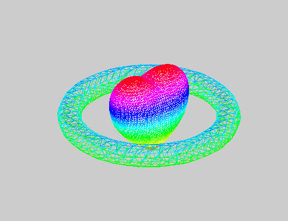

我们所生活的三维世界，总是那么丰富多彩，由此衍生出了所有立体的人和物，在各种已知和未知的物理学现象下，我们所能看到的世界万物是如此精彩而真实（？）。
但是，摄影摄像的技术让三维世界进入了二维。尽管屏幕中的世界本质还是二维，但是通过视觉线索的改变，让人们感觉这似乎就是三维世界多少算是一种提升。
那么，这种看起来的自欺欺人，是不是类似于更高维的物种看待我们呢？是不是他们也会创造低维度的投影世界？
好吧，其实我也不知道自己在写什么，还是进入主题。Excel2016系列之——曲面图。
曲面图简介
作为一般来说完全不咋用的东西，曲面图常年位于Excel最犄角旮旯的地方。其受冷落的原因至少有二：1.位置放的不好，一般不会直接看到；2.用出来也不明白它到底在说啥，还要介绍一大摞吃力不讨好。
所以嘛，这也是可以理解的，毕竟在我看来，这个世界上最具亲和力的就是散点图，一切图表均源于散点，毕竟点-线-面的思想深深植入在大脑里。这时候我猜你一定要质疑了：不对吧，折线图我还能理解，那么柱形图，饼图怎么看怎么和散点图八竿子打不着啊？
那么你一定会以为我这里会长篇大论写怎么把散点图变成柱形或者饼图吧？不，因为写到这我发现跑题了，所以，大家自由发挥吧。
扯了半天，还没介绍曲面图，其实网上查了半天，很多也模棱两可。那么简单来说，就是在一个三维直角坐标系中，已知x，y，z，根据这三个条件作图。
可以先看看这个用例：
图1 曲面图示意a好吧，熟悉的小伙伴一看就知道是Matlab做出来的，这也没啥好否认的，我就是传说中的抄袭党。
说实在的，作为工程级的数学软件，mablab的功能确实灰常强大。还能出各种奇怪的图。
比如这样的：
图2 曲面图示意b各位大侠可以根据自己的需求利用各种美化工具（如，ps、美图秀秀、win图片编辑等）修正，至于用处么，自己想...
看完了是不是觉得，曲面图简直神奇？只要你有一些神奇的函数，就能做出相应的图像。
回到正题，其实Excel也可以实现一些功能，只是肯定没那么厉害而已。
曲面图&曲面框架图
Excel上有曲面图一览里有四种：
- 三维曲面图:就是和上面结果的差不多的图。
- 三维曲面图（框架图）:把色块清空，只留边框。
- 曲面图:把x和y轴作为俯视面，z的不同值用颜色区分。
- 曲面图（俯视框架图）:就是和上面结果的差不多的图。
484完全不知所云？所以：文章惯例：成品先出
图3 心率与步长关系三维曲面图 图4 心率与步长关系三维曲面图（框架图） 图5 心率与步长关系曲面图 图6 心率与步长关系曲面图（俯视框架图）是不是有点点炫酷？图3像不像金矿山？图4像不像某模型的草图？图5像不像地理上的气候？图6像不像某狭长小岛及其海岸线？（我真不是在黑日本）
其实，上面几个图说的是同一个主题：不同步数状态下某一个学生的出现不同心率（区间化后）的占比。主要是为了考察验证心率硬件在测量动态心率中的可靠性。
因此，这里需要两个假设：1.在不同步数中，心率的值相对稳定（由于会受到前后运动状态的影响，因此心率会有一定波动）；2.不同步数之间，心率的集中值应大致呈现随步数上升而上升的趋势。
所以，不谈分析结果的话，为了研究这些主题使用曲面图无疑是非常合适的一种做法。
曲面图看似复杂，实际上数据的组织形式非常简单，只要一个二维的交叉表就可以。如下：
| 步数 | 60-70 | 70-80 | 80-90 | 90-10 | ... |
|---|---|---|---|---|---|
| 24.87% | 38.34% | 19.17% | 11.92% | 4.15% | … |
| 13.89% | 23.61% | 34.72% | 22.22% | 4.17% | … |
| 6.67% | 33.33% | 23.33% | 18.33% | 8.33% | … |
| 21.88% | 21.88% | 37.50% | 15.63% | 0.00% | … |
| 17.39% | 21.74% | 32.61% | 19.57% | 8.70% | … |
| 14.81% | 29.63% | 48.15% | 7.41% | 0.00% | … |
| 5.71% | 42.86% | 27.14% | 18.57% | 5.71% | … |
| 17.39% | 39.13% | 21.74% | 10.87% | 4.35% | … |
| 11.54% | 34.62% | 19.23% | 3.85% | 19.23% | … |
| ... | ... | ... | ... | ... | ... |
然后，全选，作图。然后，图就出来了...
图7 excel曲面图示例再然后，自己调调配色什么的就好了。也有些要注意的地方：
- x轴和y轴尽量选择连续的变量，再不济有等级关系也行
- 曲面图的关键在于调整区间的粒度，选中z轴，在【坐标轴选项】里面调整相应的区间即可
- 曲面图有趣的地方在于，自己可以按照需求进行3维旋转，选中图表，在【效果】里面的【三维旋转】进行调整即可
- 那么，关于4种表现形式究竟选择哪种的问题，我只能说，你看着办
总而言之，曲面图呈现的就是三维数据，是在不同轴上连续的变化趋势的汇总。至于更多的用法，就有待自己探索了。
结束语：曲面图也是图标的一种（这是句废话），平时的使用情况也不多，很多时候也确实并不适合用于报告中，毕竟三维图表本身就是较难理解的一种，但是在工程学上可能更为合适。于是，这里就留个小疑问：如何能够把教育数据和工程数据相联系？
那么，国际惯例，呼应副标题，所谓“在下也是三维生物啊”的意义显而易见，哪怕它本身是活在二维世界中的。嗯，所以，以后等虚拟现实和增强现实越来越成熟的话，三维图表也将更有用武之地。